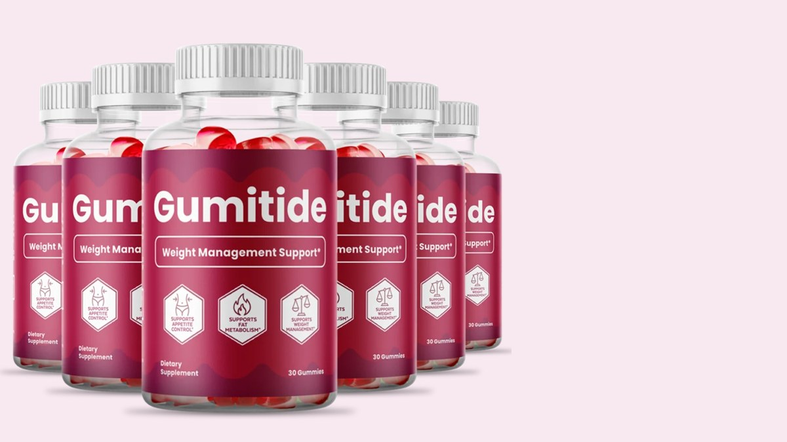
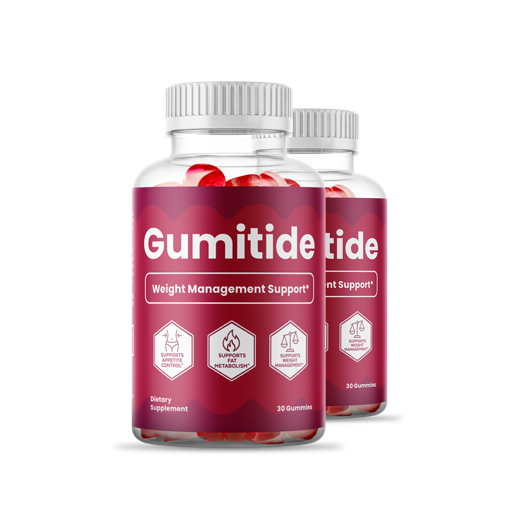
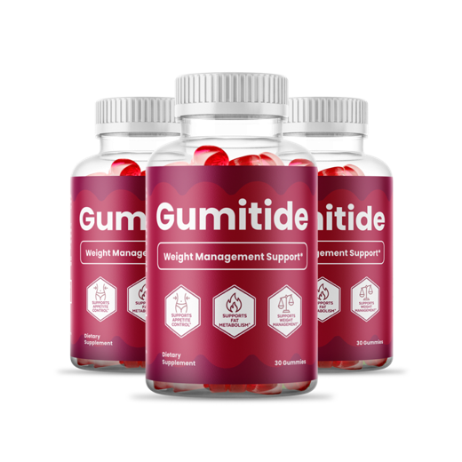

Gumitide Reviews 2026: What's in the Gummy and Is It Worth It?
Gumitide is an apple cider vinegar and BHB gummy sold for weight management support. We read the Supplement Facts panel line by line and held it up against the research.

Key takeaways
- Gumitide is a one-a-day gummy with a 525 mg proprietary blend of apple cider vinegar and BHB salts, 8 calories and 2 g of sugar.
- The label doesn't split the blend. You can't tell how much is vinegar and how much is BHB, so doses can't be checked against studies.
- The vinegar dose is far below research amounts. Trials used 15 to 30 ml of liquid vinegar a day, roughly 750 to 1,500 mg of acetic acid.
- BHB salts don't put you in ketosis. They raise blood ketones briefly; they don't burn body fat by themselves.
- Diet and activity still do the work. At best, Gumitide is a small habit cue before a meal, backed by a 60-day guarantee on official orders.
Gumitide is an apple cider vinegar and BHB gummy taken once a day before a meal. Our Gumitide review found an honest label but a small dose: a 525 mg blend with no split between ingredients, well under what vinegar studies used. It won't cause weight loss on its own. Diet and activity remain the drivers.
That's the summary. The rest of this page goes through what we actually checked: the Supplement Facts panel, the research behind each ingredient, the cost per day at each pack size, the refund terms, and who shouldn't take it. We don't run user polls or print star ratings here, so you won't find any. What you'll find is the label and the math.
If you've seen JellyTide ads too, you're not imagining the resemblance. The two products share the same panel. We cover that in our Gumitide vs JellyTide comparison.

Gumitide: check today's price
An apple cider vinegar and BHB gummy, one a day, 8 calories each. Sold only on the official site, with a 60-day money-back guarantee.
See the official price →What is Gumitide?
Gumitide is a dietary supplement in gummy form. Each bottle holds 30 gummies, and the suggested use is one gummy a day, about 30 minutes before your morning or afternoon meal, with a full glass of water. So one bottle lasts a month.
The front of the bottle says "Weight Management Support", and three badges add appetite control, fat metabolism and weight management. Those are structure-function claims, which supplements are allowed to make without FDA review, and the label carries the standard disclaimer saying exactly that.
The product is distributed for Instituto Experience in Lakeland, Florida, and the label says it's made in the USA with globally sourced ingredients. It's sold through an official order page, not through pharmacies.
What's in a Gumitide gummy?
Here is the Supplement Facts panel, transcribed from the bottle. A serving is one 2.5 g gummy.

| Label line | Per gummy | % Daily Value |
|---|---|---|
| Calories | 8 | |
| Total carbohydrates | 2 g | 1% |
| Total sugars (incl. 1 g added) | 2 g | Added: 2% |
| Sodium | 2.5 mg | 0% |
| Calcium | 1 mg | 0% |
| Magnesium | 0.75 mg | 0% |
| Proprietary blend: apple cider vinegar, BHB (calcium, magnesium, sodium beta-hydroxybutyrate) | 525 mg | Not established |
The other ingredients are corn syrup, purified water, pure cane sugar, apple pectin, citric acid, sodium citrate, tapioca starch, natural flavors and beet root powder. Nothing else is listed. There's no caffeine, no green tea extract, no garcinia, and nothing hidden behind a second blend.
The weak point is the word "proprietary." The label gives the 525 mg total but not how much of it is vinegar and how much is BHB. Nobody outside the company can line those numbers up against research. That's a common practice in this aisle, and it's still a reason to keep expectations modest.
How is Gumitide supposed to work?
The pitch rests on two ideas. Apple cider vinegar, taken before eating, is said to help with fullness and with the blood sugar rise after a meal. BHB, short for beta-hydroxybutyrate, is a ketone body, the fuel your liver makes when you're fasting or eating very low carb. The marketing link is that adding ketones nudges you toward a fat-burning state.
Both ideas start from something real. Both get stretched along the way. Vinegar's effects in studies came from doses many times larger than a gummy can hold. And BHB from a supplement is fuel your body burns, not a signal that makes it burn its own fat.
What does the research say about apple cider vinegar and BHB?
The best-known vinegar trial, from Japan in 2009, gave adults with obesity 15 or 30 ml of vinegar a day for 12 weeks. Those groups lost a little more weight than placebo, on the order of a few pounds. That's about 750 to 1,500 mg of acetic acid daily. Smaller studies also suggest vinegar with a starchy meal can soften the glucose spike that follows.
Now compare. Gumitide's entire blend is 525 mg, and that's shared between vinegar and BHB. Even if every milligram were pure acetic acid, which it isn't, it would fall short of the lower trial dose. Realistically it's a fraction of it.
BHB salts have a different problem. They do raise blood ketone levels for a few hours. But that isn't ketosis in the dietary sense, which comes from cutting carbs until your liver makes its own ketones. And ketones from a gummy are calories your body uses first, which, if anything, means it draws less on stored fat in that window. No trial we know of shows BHB salts alone causing fat loss.
There's also the size question. The panel shows only 2.5 mg of sodium, 1 mg of calcium and 0.75 mg of magnesium. BHB salts carry those minerals, so tiny mineral numbers point to a small BHB portion, and sodium citrate shares that sodium line too. We can't calculate the exact split. We can say it's nowhere near the multi-gram doses used in ketone research. Our page on whether Gumitide works walks through that arithmetic in detail.
How much does Gumitide cost per day?
One bottle is 30 gummies and one gummy a day, so each bottle is a month. These are the pack prices published at the time of writing; check the official page for the current figure.
- 2 bottles: $79 a bottle, $158 total plus $9.99 shipping. About $2.63 a day before shipping.
- 3 bottles: $69 a bottle, $207 total with free US shipping. About $2.30 a day.
- 6 bottles: $49 a bottle, $294 total with free US shipping. About $1.63 a day.

2 Bottles · Starter $79/bottle Check Availability → + $9.99 shipping
6 Bottles · Best Value
$49/bottle
Claim Discount →
Free US Shipping

3 Bottles · Popular $69/bottle Claim Discount → Free US ShippingPrices shown are the manufacturer's published rates at the time of writing and can change without notice.
Each is a one-time charge. There's no subscription or auto-ship. For context, a big bottle of liquid apple cider vinegar from the grocery store costs a few dollars and holds weeks of the doses used in trials. You're paying for convenience and taste, not for more vinegar.
Which pack fits? If you want to try it, two bottles is enough to see whether a pre-meal gummy helps you stick to a routine. We wouldn't buy six up front. A habit tool either fits your day within a few weeks or it doesn't.
What's the Gumitide refund policy?
Orders through the official checkout carry a 60-day money-back guarantee. That window starts from your order, so if you decide to try it, start on the day it arrives and make your keep-or-return call well before day 60.
Read the refund steps on the order page before you buy, and keep your order confirmation email. The guarantee applies to official orders only. Bottles from third-party marketplaces aren't covered, which is the main practical reason to buy direct.
Gumitide side effects: who should skip it?
At this dose, side effects are unlikely to be dramatic. Each gummy is 8 calories and 2 g of sugar, with 1 g of that sugar added, roughly what's in a couple of jelly beans. Some people get mild stomach upset from anything acidic on an empty stomach, which is one reason the label pairs it with a full glass of water.
The label itself asks you to check with a doctor first if you're under a physician's care, take medication, are pregnant or nursing, or have a known medical condition. We'd add a few specifics:
- Diabetes medication or insulin. Vinegar is studied for after-meal glucose, so tell your doctor before adding it.
- Diuretics or potassium-lowering drugs. Large amounts of vinegar have been linked to low potassium; small amounts are unlikely to matter, but ask.
- Sodium-restricted diets. The sodium per gummy is tiny at 2.5 mg, but your doctor should know about BHB salts.
- A history of eating disorders. Any weight-focused product can feed unhealthy patterns.
- Children. It's labeled for adults and should be kept out of reach, since gummies look like candy.
If you're trying to manage weight alongside a medical condition, your doctor is a better first stop than any gummy. Our explainer on blood sugar swings and how they feel covers why steady meals matter more than supplements.
Is Gumitide a scam or legit?
It's a real product with a real, readable label, a named distributor and a published guarantee. That's not a scam. The fair criticism is about the gap between the marketing and the dose. Ads in this category often imply fast fat loss or "keto without dieting," and nothing on this label supports that.
Buy only from the official page. Listings on Amazon, eBay or Walmart that use the Gumitide name may come from resellers, and they wouldn't carry the official 60-day guarantee. If the price looks much lower somewhere else, that's a reason for caution, not a bargain.
How do you give Gumitide a fair test?
Most online Gumitide reviews judge it by the scale after a week, which tells you almost nothing. Body weight swings by two or three pounds from water, salt and meal timing alone. If you're going to try it, set it up so you can actually learn something before the guarantee runs out.
- Weigh yourself for a week before you start. Same time each morning, after the bathroom, before breakfast. Average those numbers so you have a real baseline.
- Take it at the same meal every day. Lunch works for most people. The label suggests about 30 minutes before eating, with a full glass of water.
- Change one other thing, not five. Add a daily walk or swap sugary drinks for water. If you overhaul everything at once, you won't know what helped.
- Track hunger, not just weight. A simple note after lunch (full, okay, still hungry) will show whether the pre-meal routine changes how much you eat.
- Compare weekly averages at week six. That leaves time to request a refund inside 60 days if nothing has shifted.
Here's an honest prediction. If you notice anything, it'll probably be the glass of water and the pause before eating, not the gummy's chemistry. That's still worth something. Drinking water before meals has its own small body of research behind it, and it costs nothing. You may find you don't need the gummy at all once the habit sticks, and that's a perfectly good result.
One more thing to watch for. Some sellers in this category run copycat sites with near-identical names and their own checkout. Check the address bar before you pay, and if a page promises a set number of pounds by a set date, close it.
Gumitide reviews: pros and cons
| Pros | Cons |
|---|---|
| Short, readable label with no stimulants | Proprietary blend hides the vinegar and BHB split |
| Only 8 calories and 2 g of sugar per gummy | Vinegar dose is a fraction of the amounts used in trials |
| Easy once-a-day routine before a meal | BHB salts don't cause ketosis or fat loss on their own |
| 60-day money-back guarantee on official orders | Costs far more per day than plain liquid vinegar |
| No subscription, one-time charge | Sold online only; marketplace copies aren't covered |
Our verdict on Gumitide
Gumitide is honest about what's in it and vague about how much. The 525 mg blend is too small to match the vinegar research, and BHB salts don't do what keto marketing implies. Don't expect it to move the scale by itself.
Where it can earn a place is as a cue. A gummy and a glass of water half an hour before lunch is a small ritual that some people find helps them slow down and eat less. If that sounds useful, the guarantee lets you test it with limited risk. If you want real change, pair it with the boring basics: more protein and fiber, fewer liquid calories, regular walking and decent sleep. Our energy and metabolism hub has more on those, and our look at intermittent fasting covers the one reliable way to raise ketones yourself.
Gumitide: check today's price
An apple cider vinegar and BHB gummy, one a day, 8 calories each. Sold only on the official site, with a 60-day money-back guarantee.
See the official price →Frequently asked questions
How many Gumitide gummies should I take a day?
One. The label says adults should take one gummy daily, about 30 minutes before the morning or afternoon meal, with a full glass of water, unless a healthcare professional says otherwise. Taking more won't speed anything up and adds sugar.
Is Gumitide keto friendly?
Mostly. Each gummy has 2 g of carbohydrate, all of it sugar, which fits inside most keto carb budgets. But the gummy won't put you into ketosis. Only cutting carbs or fasting does that.
Is Gumitide sold on Amazon or at Walmart?
It's sold through its official order page. Listings on Amazon, Walmart or eBay may be resellers, and those orders aren't covered by the official 60-day guarantee.
How long does one bottle of Gumitide last?
A bottle has 30 gummies. At one a day, it lasts 30 days.
Does Gumitide have caffeine or stimulants?
No. The label lists only the apple cider vinegar and BHB blend plus gummy ingredients such as corn syrup, cane sugar, pectin, citric acid, sodium citrate, tapioca starch, flavors and beet root powder.
Will Gumitide hurt my teeth like liquid vinegar can?
Liquid vinegar is acidic enough to wear enamel with frequent use. A single small gummy is far less acidic exposure, but like any sugary chew it can stick to teeth, so drinking the recommended glass of water helps.
Can I take Gumitide with a GLP-1 medication?
Ask your prescriber first. There's no known direct interaction, but both affect appetite and digestion, and your doctor should know about every supplement you take while on a weight medication.
Want to try it with the guarantee?
Gumitide is one gummy a day, 8 calories each, with a 60-day money-back guarantee on official orders. Check the current pack prices on the official page.
See Gumitide's official price →Related: JellyTide review · Sugar and brain fog · Intermittent fasting and the brain